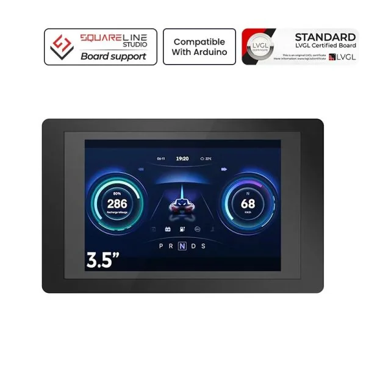

ESP Terminal 3.5"
Elecrow · Elecrow ESP Terminal – ESP32-S3 3.5" 480×320 16-bit parallel capacitive
ESP Terminal 3.5" is a 3.5" 480x320 TFT Capacitive touch ESP32 display board by Elecrow based on the ESP32-S3 with 16MB flash, 8MB PSRAM.
Features, ports & interfaces
- 8080 parallel (MCU) display
- Capacitive touch (FT6236)
- 8 MB PSRAM
- 16 MB flash
- microSD (TF) card slot
- Wi-Fi 4 (802.11 b/g/n, 2.4 GHz) – version from the ESP32-S3 datasheet
- Bluetooth 5 (LE) – version from the ESP32-S3 datasheet
- Grove port: 4x Crowtail (HY2.0-4P: analog, digital, UART, I2C)
- Battery: LiPo battery interface PH2.0
Specifications
| Parameter | Value | Source |
|---|---|---|
| Screen size | 3.5" | source |
| Resolution | 480x320 | source |
| Panel | TFT | source |
| Shape | Rectangular | |
| Display interface | 8080 (16-bit parallel) | source |
| Display driver | ILI9488 | source |
| Touch | Capacitive | source |
| Touch controller | FT6236 | source |
| MCU / SoC | ESP32-S3 module | source |
| MCU family | ESP32-S3 | source |
| Flash | 16MB | source |
| PSRAM | 8MB | source |
| Wi-Fi | 802.11 b/g/n, 2.4 GHz | source |
| Bluetooth | BLE 5 | source |
| Category | Elecrow CrowPanel | |
| Battery | LiPo battery interface PH2.0 | source |
| Dimensions | 106 x 66 x 13 mm | source |
| Grove / HY2.0 port | 4x Crowtail (HY2.0-4P: analog, digital, UART, I2C) | source |
| SD / TF | Micro TF card slot | source |
| Case / shell | Acrylic shell (in package) | source |
| Vendor | Elecrow |